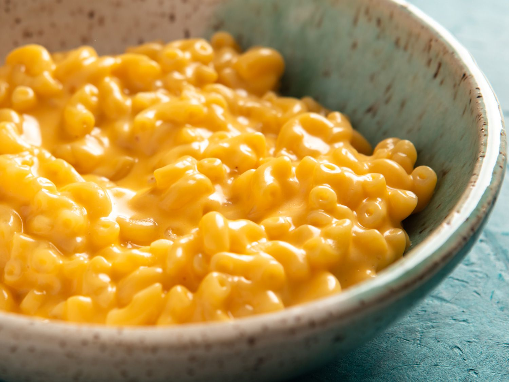

Fennel Pasta

Description
This recipe is incredibly easy, and your kids would probably love to help you make it! I let my littles help grate the cheese and measure the noodles.
For me, mac and cheese has to have a smooth and creamy cheese sauce, and I’ve had enough trial and error in this department to understand that there are a few simple things you can do to achieve that smooth sauce we all want in our macaroni!
Ingredients
- Elbow macaroni
- Butter
- Flour
- Salt and Pepper
- Milk
- Half and half
- Shredded cheddar cheese
Steps
- Preheat the oven. Preheat to 325 degrees and lightly grease a square baking dish.
- Cook the macaroni. Slightly undercook your noodles (about 1 minute under al-dente). Drain and set aside.
- Make the roux. Melt the butter in a medium saucepan over medium heat. Blend in the flour, salt, and pepper. Cook for 2 minutes.
- Add milk and cheese. Stir in milk and half and half, slowly, stirring constantly. Remove from heat. Add 1 cup shredded cheese to the sauce and stir just until melted. Add the cooked macaroni noodles and toss to coat them in the sauce.
- Pour into baking dish. Pour half or the pasta mixture into the prepared baking dish. Sprinkle ½ cup cheese over the top. Pour remaining pasta over it and sprinkle with remaining cheese.